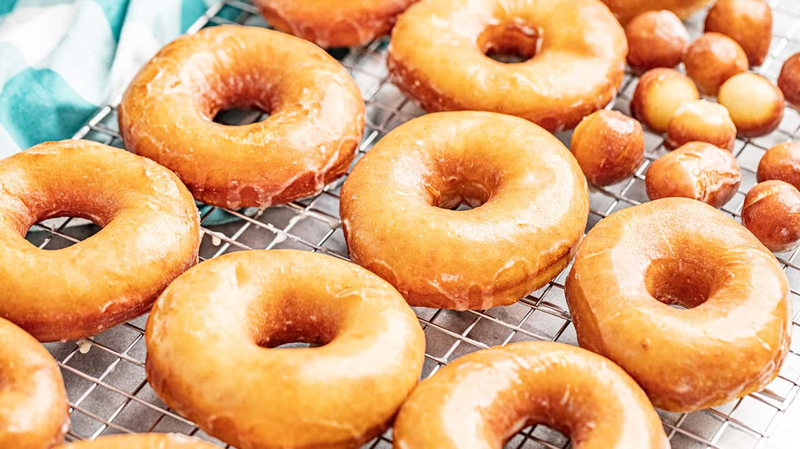

Glazed Doughtnuts

Ingredients
With that signature bakery taste and texture, doughnuts from a doughnut shop are incredibly delicious and indulgent. When you can’t pick up your favorite doughnuts, why not make them at home instead? Today we’re taking a deep dive into homemade doughnuts– fried, sugary, old-fashioned, and comforting. It’s so much fun to be able to make them from scratch without leaving the comforts of home.
- Milk
- yeast
- Sugar
- Butter
- Salt and vanilla extract
- Nutmeg
- Floor
Steps
- Prepare the dough. The dough comes together with a mixer. You can also make the dough by hand, but it requires a bit of arm muscle. After the dough comes together in the mixing bowl, knead it for 2 minutes.
- Let the dough rise. In a relatively warm environment, the dough rises in about 90 minutes.
- Punch down the dough to release the air.
- Roll & cut into doughnuts. Roll the dough out to 1/2 inch thickness. Cut the doughnuts using a 3-3.5 inch doughnut cutter. Line 1-2 baking sheets with parchment paper or a silicone baking mat. Place doughnuts (and doughnut holes!) onto the lined baking sheet, then lightly cover and allow to rest as you prepare the oil.
- Prepare the oil. Using a heavy-duty pot and an oil thermometer, heat the oil to 375°F (191°C). Place a cooling rack over another baking sheet.
- Fry the doughnuts. Working with 2-3 doughnuts at a time, cook for 1 minute on each side. Carefully remove from the oil and place onto prepared rack. Repeat with remaining doughnuts.
- Make the glaze. Dip each warm doughnut into the glaze and coat both sides. After about 20 minutes, the glaze will set.